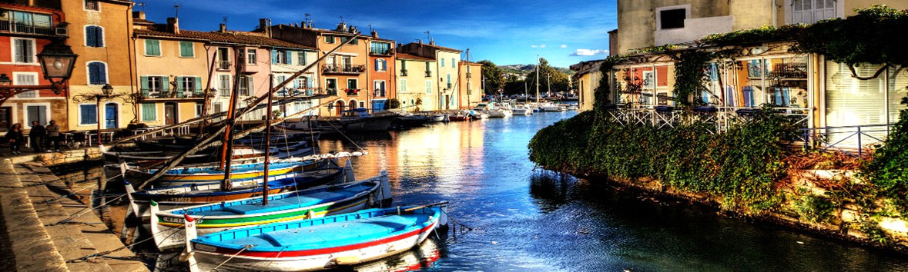

Марсель – Martigues – Tarascon – Avignon –
Orange – Nyons – Carpentas – Roussillon –
Gordes – Cavaillon – Menebres – Aix-de-Provence
Луара, Нормандия, Жиронда, наконец, Прованс – они такие разные, но одинаковые в одном – в приветливости людей и отличных дорогах. После величественности королевских замков, впечатляющих военных мемориалов Нормандии, дурманящих винарен Медока и Бордо, мы попадем в тихую провинциальную Францию с полями и виноградниками, растянувшимися вдоль неторопливой Роны, проедем через многочисленные малые и не очень городки, с древней архитектурой, очаровательные, можно сказать, уникальные, деревни, вскарабкаемся на невысокие горы – предгорья Альп, чтобы увидеть поля знаменитой лаванды – небольшого синего горного цветка – символа Прованса. Мы увидим много красот и очень много – не увидим, потому что весь Прованс – прекрасен.
Те, кто захочет, сможет остаться и уже без велосипеда отдохнуть на Средиземноморье - знаменитых курортах Кот д’Азюр: Каннах, Ниццы, Монако или еще чуть подальше, но значительно дешевле – вблизи итальянской Вентимильи. Ну, и конечно, задержаться в огромном приморском Марселе, но это уже не Прованс, хотя формально считается его столицей.
Маршрут рассчитан на средний уровень подготовки: желающим будут сервированы холмы, серпантины и крутяки, которые, впрочем, можно и пропустить, объехав по более плоским участками дорог.
Маршрут начинается в городке Мартиг (Martigues) вблизи марсельского аэропорта.
Городок называют Венецией в Провансе из-за рядов домой, расположенных вдоль каналов, по которым снуют лодки. Главный канал - Каронт (Canal de Caronte), соединяющий лагуну Бэр (Etang de Berre) с заливом Фос (Golfe de Foss). Очаровательный старый город (он образовался из трех деревень примерно 400 лет назад, хотя здесь жили еще с римских времен) расположен у входа в канал и состоит из трех различных по характеру частей (L'Isle - Остров; Ferrières – на севере; Jonquières – на юге).
Самый живописный район – Остров. В центре расположена церковь XVII века Eglise de la Madeleine и часовня моряков Chapel Notre-Dame-des-Marins с впечатляющим видом на лагуну.
На юге, на берегу канала, вы встретите церковь Saint-Genies и небольшую барочную часовню Chapelle de l'Annonciade (XVII в) с золотым алтарем. За городом на юге есть песчаные пляжи: Plage de la Saulce и Plage du Verdon.
А над городом на холме расположена восстановленная старая мельница – один из символов Прованса. Между лагуной и морем расположен район каланков (Calanques) - живописных белых скал, но посещение его требует много времени.
На север от Мартига на нашем пути лежит огромный природный парк Parc de Figuerolles. Мы будем ехать по каменистым дорожкам под кронами средиземноморских хвойников, то взбираясь на холмы, но спускаясь к берегу лагуны Бэр. Впрочем, эта идиллия длится лишь полтора десятка километров, и вот мы спускаемся на берег на автомобильную дорогу, петляющую то через городки, то вдоль галечных пляжей лагуны до города Истр. Istres – старинный приморский городок с маленькими улочками взбирающимися к вершине холма, где расположена укрепленная церковь Eglise Notre Dame de Beauvoir. Оттуда открывается вид на черепичные крыши Истра и голубые воды маленькой лагуны de L'Olivier.
Еще 20 км по плоской равнине – и мы достигаем предгорьев Малых Альп. На нашем пути – уникальный скальный городок Les Baux de Provence - один из самых живописных в Провансе. Даже на человека, повидавшего не один замок Европы, замок Ле Бо производит сильное впечатление. Это огромное пространство, в несколько раз больше самой деревеньки, с прекрасными панорамными видами, вырубленными в скале домами, отвесными высоченными скалами и живописными развалинами замка, сияющего в своей красе в лучах заходящего солнца, с порхающими птицами, проносящимися в метре от вас.
Вниз, вниз - в Тараскон. У человека, хоть немного знакомого с французской литературой, этот город связан с именем писателя Альфонса Доде (Daudet) и его знаменитым персонажем Тартареном (Tartaren de Tarason). Менее знаменит его роман «Истории моей мельницы» (Lettres de mon moulin). По красочности и сложности языка в описаниях природы и людей Прованса он напоминает Гоголя на французском. Сама мельница Доде расположена в 11 км от Тараскона и до сих пор имеет сохранившиеся крылья. Желающие смогут сделать небольшой крюк и заехать туда по дороге из Бо.
Из памятников архитектуры вы встретите замок короля Рене, церковь Collegiale eglise de S. Martha смешанного римского и готического стилей, а также полуразрушенный францисканский монастырь Cordeliers – немой свидетель антирелигиозного угара времен французской революции.
Ну, и конечно – прекрасную Рону.
В этот день мы предлагаем поездку на уникальный архитектурный ансамбль – Ponte du Card - восстановленный римский мост.
Многоярусный арочный мост, чудесно вписывающийся в окружающий ландшафт, вот уже 2 тысячи лет соединяет два берега реки Gardon, В римские века его использовали также в качестве акведука. Мост дю Гар является вторым по посещаемости туристическим местом Франции после Монт Сен- Мишель в Нормандии.
Отсюда до Авиньона рукой подать..., но по шоссе. Мы поедем окружным путем через древнюю деревню Castillion du Gard и преодолеем небольшой перевал, чтобы въехать в древний Авиньон тихими дорожками.
Один из главных культурных и религиозных центров Франции, главный город департамента Воклюз, Авиньон лежит в месте слияния Роны и реки Дюранс. Центральная часть города все еще окружена крепостными стенами, построенными в 1349-1403 годах, причем крайний участок возводился при Бенедикте XIII - последнем из девяти римских пап, для которых Авиньон был местом жительства. Несмотря на свой угрожающий вид и 39 крепостных башен, они никогда не были серьезной защитой для города, поскольку при трехметровой толщине редко где возвышаются более, чем на 9 метров над землей.
На площади Дю-Пале (Du Palais) возвышается самый внушительный памятник города - обширный комплекс Папского дворца (1339-1364 гг.) с казначейством, Башней ангелов, консисторией Старого дворца и садами. Поблизости можно увидеть парк Роше-де-Дом и пересекающий Рону древний (XII в.) частично разрушенный мост Пон-Сен-Бенез XII в. (Pont Saint Benezet). Кто не знает знаменитый припев «sur le pont d’Avignon» - это о нем. Мост некогда соединял город с расположенным на другом берегу пригородом Вильнёв-лез-Авиньон (Villeneuve-les-Avignon) и был разрушен еще с начале XVII в. А над всем этим возвышается венчающий скалу Рок-де-Дом кафедральный собор Нотр-Дам-де-Дом (XII в.), построенный в достаточно необычном стиле, включающем архитектурные элементы разных эпох. Малый дворец (Petit Palais) сейчас содержит собрание живописных работ и скульптуры XIII-XIV столетий.
На окруженной симпатичными кафе площади l'Horloge возвышаются внушительный комплекс городской ратуши (Hotel de Ville, XIV в.) с часовой башней и опера. В воскресенье утром можно услышать бесчисленные перезвоны многочисленных церквей, монастырей и часовен, расположенных в радиусе буквально 3-5 кварталов от этого места. К наиболее известным городским церквям относятся Сен-Агриколь (XIV в.), Целестинская церковь с гробницей папы Климента VII и святого Бенизета. Южнее возвышается дворец Пале-дю-Рур (XV в.), в котором сейчас расположился Центр провансальской культуры, а западнее него начинаются кварталы красивых старых особняков. Между кварталом Банастери (Banasterie) и площадью де Карм (des Carmes) простирается лабиринт крошечных старых улиц, в которых почти невозможно не заблудиться.
Дорога на север вверх по течению Роны приведет нас в городок Chateauneuf du Pape – летнюю резиденцию пап. Там папы родом из Франции традиционно ожидали, пока для них приготовят резиденцию в Авиньоне, а летом отдыхали от городской суеты.
Далее мы проследуем в древнеримский город нарбонской Галлии – Араузион, преобразованный во французский Оранж в начале XVIII в. В Оранже сохранились грандиозные руины римского времени, занесённые в список всемирного наследия человечества. Полукруглый театр не имеет себе равных по степени сохранности: тыльная стена превышает в длину 100 метров, в центральной нише — статуя императора Августа высотой 370 см. Триумфальная арка высотой 19 метров с рельефами, прославляющими победы Юлия Цезаря, — один из самых колоссальных памятников такого рода. В 1869 году Théâtre antique d’Orange, был реконструирован и стал местом проведения музыкального фестиваля под названием Chorégies d’Orange, который, существуя с 1902 года, стал ежегодным и сейчас является знаменитым оперным фестивалем.
Еще 30 км – и мы останавливаемся на ночлег с маленьком городке c длинным названием Saint Paul Trois Chateau. Хотя замков вы не досчитаетесь, длинную крепостную стену со встроенными домами, сохранившимися с XII в., и римскую церковь, перестроенную тамплиерами, вы найдете. На обед, если повезет, нужно приготовиться попробовать трюфели – ведь этот городок – один из двух французских трюфельных центров. Работает музей трюфеля. Впрочем, время сбора трюфелей – ноябрь.
Сегодня мы едем вперед и вверх – ведь мы хотим увидеть лавандовые поля, а лаванда растет в горах. Для сокращения километража мы объедем стороной городок Гриньян, знаменитый тем, что здесь похоронена писательница, основательница эпистолярного жанра, известная нам под именем маркизы Севинье (это ее слова: «Чем больше я познаю людей, тем больше люблю собак») Через живописные деревушки Suze-la-Rousse, Miralbelle–de-Baronne двигаемся в сторону Ниона, примостившегося у подножья гор. Далее – перевалы, серпантины, крутяки и поля лаванды, где работают виртуозные альпинисты-трактористы. Однако синий цвет поля приобретут лишь в июне, когда лаванда зацветет.
К вечеру мы спускаемся к городку Buis les Baronnes, на реки Лувез (l’Ouveze), где сохранился старый римский мост, ворота эпохи возрождения, монастыри урсулинок и доминиканцев.
Спускаемся вниз, чтобы подняться и снова спуститься.
День простой для тех, кто хочет отдохнуть от трудов педалирования, Например, можно зависнуть на 2-3 часа в очаровательном городке Vaisin-la- Romaine в 20 км от ночевки или пораньше приехать в Карпентра . Но можно закрутить горную петлю километров этак на 40 (от Malaucene 21 км наверх при наборе высоты 1600 м и 22 км вниз до Bedoin) и побывать на знаменитой горе Венту (Ventoux), испытав себя на этапе Тур де Франс, который считается самым сложным и называется «Лысой горой» или «Чудовище Прованса» (рекорд подъема – чуть более часа).
Но вот чудовищные серпантины позади, и мы въезжаем в Карпентра через ворота Porte d'Orange – это все, что осталось от крепостной стены XIV в. с 32 башнями.
Достопримечательности для осмотра для тех, у кого остались силы:
Собор St Pierre and St Siffrein и фонтан XV в.
Римская триумфальная арка
Замок графов тулузских XIII в. Château des Comtes de Toulouse,
Старейшая в Европе cинагога (XV в.)
Сегодняшний и следующий дни посвящены Люберону. Этот горный массив с разбросанными живописными деревеньками и городками благодаря уникальности и разнообразию пейзажей стал интернациональным из-за обилия иностранцев, посещающих и проживающих там.
Первая остановка на пути – знаменитая деревня Руссильон, расположенная на холмах с самыми большими запасами охры на Земном шаре. Красный, желтый, коричневый цвета холмов здесь резко контрастируют с зеленым цветом сосен, создавая неповторимые пейзажи. Цвета строений, образующих лабиринт улочек, площадей и лестниц гармонируют с цветом скал.
Следующая остановка запланирована в Горде - небольшом живописном старинном городе, приткнувшимся на скале в горах Воклюз. Горд, с его крепостными стенами, сохранившимися средневековыми постройками и брусчатыми мостовыми в стиле «calade». Этот город входит в ассоциацию красивейших городов Франции.
Замок Горд был построен в XI в., приобрел современный вид в XVI в. Он играл значительную роль в бурной истории Франции и даже не был разрушен революционерами.
Есть еще: Церковь Сен Фермен (Eglise Saint-Firmin) XIII-XVIII вв.
Дворец Сен – Фермен (Palais Saint Fermin)
Фонтан XIV в.
Археологический музей под открытым небом Village des bories включает 20 старинных каменных строений.
В паре километров от Горда под горой находится цистерцианское аббатство Сенанк (Senanque)- один из самых известных монастырей Франции, который славится не только своей прекрасно сохранившейся романской архитектурой, но и может похвастаться одним из самых популярных лавандовых полей Прованса.
Но вот мы спустились на ночевку в Кавайон – дынную столицу Франции. Этот небольшой город имеет традиционный набор архитектурный ансамблей: Собор XII в., римскую триумфальную арку и красивую синагогу. С холма Сен Жак открывается вид на город и простирающийся до горизонта Люберон. .
Выезжаем из Кавайона и вскоре попадаем в древнюю деревню Менебр (Ménerbes) с ее бывшей протестантской цитаделью, по праву считающуюся жемчужиной Прованса.
Менебр и следующая не менее живописная средневековая деревня Лакост (Lacoste) связаны с именем скандально известного писателя маркиза де Сада. Руины его замка остаются на вершине холма над Лакостом.
И вот наконец – финиш. Мы въезжаем в неофициальную столицу Прованса – город Экс де Прованс. Когда-то Экс был окружен стеной с 39 башнями, из которых сохранилась лишь одна башня, но Экс сохранил свое богатое историческое и культурное наследие: живописные старинные улицы и площади, аристократические особняки с элегантными фасадами, многочисленные дворцы провансальской знати XVII-XVIII веков преимущественно в стиле итальянского барокко; городскую ратушу с часовой башней; фонтан четырех дельфинов, окруженный дворцами XVIII века. Прогуляйтесь по средневековой части города, по бульвару Мирабо (le Cours Mirabeau), по кварталу XVII века Мазарини (le quartier Mazarin). Район Мазарини называется по имени архиепископа Экса, брата парижского кардинала. Особняки здесь выстроены из особого желтого песчаника, который "светится" даже в пасмурную погоду.
Из памятников архитектуры города выделяются прекрасный собор V-XIII вв. Сен-Совёр (Cathedrale Saint-Sauveur), в архитектуре которого смешаны 3 стиля разных эпох: романский, готический и барокко; готическая церковь XIII в. Сен-Жан-де-Мальт (Saint-Jean-de-Malte). Есть в городе и древнеримские руины.
В Экс-ан-Прованс родился известный французский художник Поль Сезанн, который всю жизнь воспевал в своем творчестве этот необыкновенный город с его неподражаемыми пейзажами. Однако кроме "сезанновских пейзажей" от Сезанна здесь, к сожалению, почти ничего не осталось.